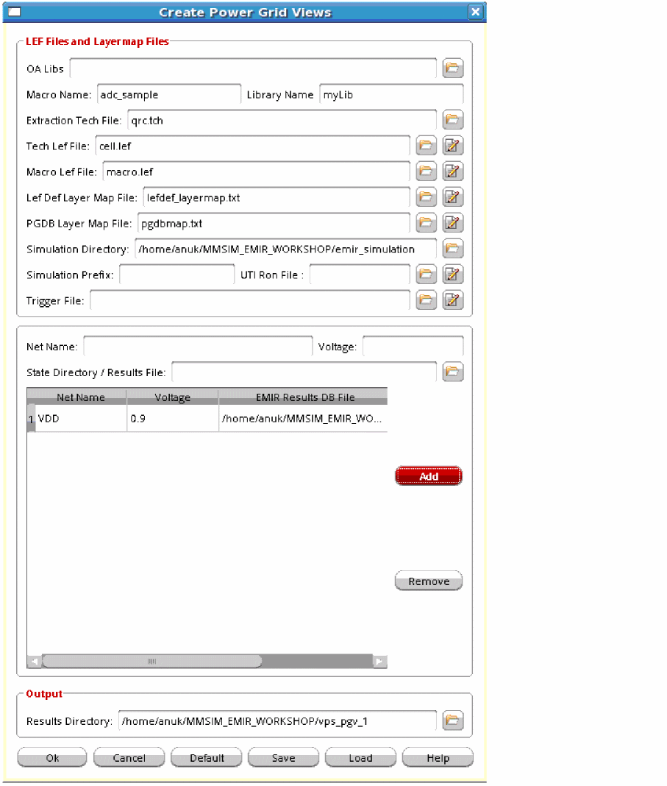

14
Power-Grid View Generation
- What is Power-Grid View?
- PGV Generation in Voltus-Fi-XL
- Data Requirements and Flow for PGV Creation
- Open Access (OA)-Based Library Generation
- Automatic Generation of Layer Map Files
- Generating Power-Grid Views in Voltus-Fi-XL
- Troubleshooting Information for PGV Generation in Voltus-Fi-XL
What is Power-Grid View?
A power-grid view (PGV) is a model view of the design that contains information about the power ports of the cell or block. It also contains information about the internal power grid, intrinsic capacitance, and the tap current distribution within the cell or block.
PGV Generation in Voltus-Fi-XL
Increasing operating frequency and density of IC designs increases the need for IR drop and Electromigration (EM) power-grid analysis. Power-grid signoff analysis is provided by Voltus in the digital domain, and Voltus-Fi-XL in the analog domain. Voltus-Fi-XL provides the ability to create power-grid views (PGVs) of an analog design block that can be used in Voltus for mixed-signal analysis. PGVs can be generated both in the GUI and batch command mode in Voltus-Fi-XL.
PGVs provide an accurate characterization of capacitance and currents, and power-grid extraction. Voltus uses these views to model power rail and power distribution information for each instance of the cell in the design for dynamic or static full-chip power-grid analysis.
For more information about PGVs, refer to the “Power-Grid Library Generation” chapter in the Voltus IC Power Integrity Solution User Guide.
Related Topics
create_pgv, Generating Power-Grid Views in Voltus-Fi-XL, Create Power Grid Views Form
Data Requirements and Flow for PGV Creation
Power-grid view generation in Voltus-Fi-XL depends upon the simulator-generated database and current files. For generating PGVs in Voltus-Fi-XL, ensure the following while performing simulation using Spectre APS/XPS.
-
Enable the
emirmode. The EMIR analysis is run like a regular APS/XPS simulation with the additional+emiroption. For details, see Simulation Requirements and Setup in the “Data Preparation” chapter. -
Generate the current files for all the power nets for which PGVs are being generated. This is done by specifying UTI commands in the Spectre input file. The syntax of the command is as follows:
uti0 uti signal=
The syntax contains the following parameters:net_namestart=start_timecycles=number_of_cycles_for_this_measureintervals=number_of_pointsclockcycle=clock_periodmethod=[0|1|2][0|1|2][0|1|2] filename=filename_prefix_for_this_measuretermflag=0 Namemangling=0-
signal=signal_name
Specifies the net name for which current is to be calculated. -
start=start_time
Specifies the start time from which the current will be written in the current file. -
cycles=number_of_cycles_for_this_measure
Specifies the number of clock cycles to be captured in the current file. By default, one cycle is captured. -
intervals=number_of_points
Specifies the number of time points or measurement intervals within a clock cycle. -
clockcycle=clock_period
Specifies the length of the clock cycle or the total duration for which the current information is being written in the current file. You must specify the unit. -
method=[0|1|2][0|1|2][0|1|2]
Specifies the method that the simulator uses in post-processing clock analysis data.
[012]The number in the first position,(0), specifies the method of peak current calculation.
[012]The number in the second position,(1), specifies the method of average current calculation.
[012]The number in the third position,(2), specifies the method of RMS current calculation.
0: Reports the maximum out of each interval over all periods.
1: Reports the average out of each interval over all periods.
2: Does not calculate peak, average, or RMS current.
The default is212, which is average current calculation. -
filename=filename_prefix_for_this_measure
Specifies the prefix for the current files that are being generated. -
termflag [0 | 1]
Specifies the terminals which will be output. Specify0to output the first three terminals. Specify1to output all the terminals. -
Namemangling
Specifies namemangling. When set to0, specifies that names should not be mangled.
Here is an example of this command.uti0 uti signal="IO.VDD" start=0n cycles=1 intervals=133 clockcycle=2ns method="212" filename="vps" termflag=0 Namemangling=0
-
-
In the Spectre input emir conf file, specify
eisopt save_gnd_caps=1to include the grid capacitances in the EMIR database so that they can be used in power-grid flow. For example:net name=[I0.*] analysis=[iavg irms vmax vavg]
eisopt save_gnd_caps=1
emirutil autorun=[true]
The following table shows the required inputs for generating power-grid views in Voltus-Fi-XL.
Table 14-1 Inputs Required for PGV Generation
The following diagram illustrates the flow of PGV generation in Voltus-Fi-XL:
Figure 14-1 Power-Grid View Generation Flow in Voltus-Fi-XL
Open Access (OA)-Based Library Generation
Voltus-Fi-XL lets you specify an OpenAccess (OA) database for PGV Generation. You can either specify the LEF technology file/Macro LEF file or the OA libraries. The OA library files contain information from both the LEF technology file and the Macro LEF file.The layer map file is automatically created from the specified OA file. Alternatively, you can specify the layer map file.
In the GUI, the OA libraries can be specified in the OA Libs field of the Create Power Grid Views form. This is shown in the subsequent section.
In batch mode, the OA library can be specified by using the -oa_lib parameter of the create_pgv command.
Automatic Generation of Layer Map Files
The PGV flow in Voltus-Fi requires the following layer map information:
- LEF layer map file: Provides the mapping between the LEF layers and layers in the technology file.
- PGDB layer map file: Provides the mapping between the xDSPF layers and layers in the technology file.
These layer map files can either be specified in batch mode and the GUI. However, if not specified, the software generates these files for PGV generation.
Automatic Generation of the LEF layer map File
The following parameter of the create_pgv command is used to specify the LEF layer map file:
create_pgv -lef_layer_map filename
The above parameter is optional. If specified, the software uses the specified layer map file for running the PGV flow. If not specified, Voltus-Fi automatically generates the LEF layer map file.
The PGDB layer map file provides a mapping between the DSPF layer names that are written in the simulation database and the technology file layer names. Multiple DSPF layers can be mapped to one technology file layer.
The following parameter of the create_pgv command is used to specify the PGDB layer map file:
create_pgv -pgdb_layer_map pgdb_layermap_file_name
To generate the layer map file automatically, do not specify the above option. In this case, the software generates the PGDB layer map file with the name, “VFI_generated_pgdb_layer_map.txt”.
An example of the *LAYER_MAP section for a third-party DSPF file is shown below:
*LAYER_MAP
*0 SUBSTRATE
*1 AP ITF=AP
*2 M0_A ITF=M0
*3 M0_B ITF=M0
*4 M1_A ITF=M1
*5 M1_B ITF=M1
*6 M0_A_SRM_SP ITF=M0
*7 M0_B_SRM_SP ITF=M0
*8 M0_A_SRM_2P ITF=M0
*9 M0_B_SRM_2P ITF=M0
*10 M1_A_SRM_SP ITF=M1
An example of the *LAYER_MAP section for a Quantus DSPF file is shown below:
*LAYER_MAP
*0 none
*1 M4
*2 M3
*3 M2
*LAYER_MAP” section, an error message is displayed asking the user to specify the PGDB layer map by using the -pgdb_layer_map parameter of the create_pgv command.Workaround for Missing Layer Information in the Auto-Generated PGDB layer Map File
If the software issues a warning message during the auto-generation of the layer map file, such as the one shown below, it means these layers are not mapped in the VFI-generated PGDB layer map file. In this case, add these layers manually in the file.
Warning: The following layers from dspf are missing in the pgdbLayerMap file specified. Please add these layers in pgdblayermap file. Missing layers may cause connectivity problems in PGV creation for the net VDD.
mwires bwires
If there are no warnings, the VFI-generated PGDB layer map file can be used for running the PGV flow without making any changes.
Generating Power-Grid Views in Voltus-Fi-XL
Voltus-Fi-XL creates PGVs for both static and dynamic rail analysis. The software creates PGVs for static rail analysis along with the PGVs for dynamic rail analysis by using the average values of the current waveforms. However, it does not create PGVs only for static rail analysis.
To create power-grid views in Voltus-Fi-XL, perform the following steps.
-
In the Voltus-Fi-XL console, choose IR/EM Analysis – Create Power Grid View.
The Create Power Grid Views form is displayed.
 -
In the LEF Files and Layermap Files group box, specify the various filenames.
-
Specify the OA Libs, which is the name of the OA database library.
- Specify the Macro Name, which is the top cell name.
- Specify the Library Name, which is the name of the library. This option is used to create a library with a name different than that of the macro. By default, a library is created with the same name as that of the macro.
- Specify the Extraction Tech File, which provides the name of the technology file that will be used for reading the technology data.
- Specify the Tech Lef File, which includes the LEF information for the technology data.
-
Specify the Macro Lef File, which includes the LEF information for the design.
- Specify the Lef Def Layer Map File, which provides the mapping between LEF layer names and technology layer names.
-
Specify the PGDB Layer Map File, which provides the mapping between xDSPF layer names that are written in the simulation database, and the technology layer names. For more information about the LEF layer map file and PGDB layer map file formats, see LEF layer Map File and PGDB layer Map File in the “File Formats” chapter.The Tech Lef file, the Macro Lef file, the Lef Def Layer Map file, and the PGDB Layer Map file can be created and edited using the edit buttons provided against each of these fields.
-
Specify the Simulation Directory, which contains the current (
*.ptiavg) files. -
Specify the Simulation Prefix, which is the prefix used for creating an instance while performing the simulation. The prefix is specified along with the hierarchy separator. This input is optional.
For example, you can specify “XO.”or “IO.”.In these examples,“XO”or“IO”are prefixesand “.”is the hierarchy separator. You can check the prefix used during simulation in your simulator input file. -
Specify the UTI Ron File that is generated by Spectre. This file contains multiple on-resistance (Ron) values, that is minimum, maximum, and average, for powergates. A sample file is shown below:
D-Term-Net S-Term-Net Ron_avg(Ohm) Ron_max(Ohm) Ron_min(Ohm) Power-Gate
outp VDD 1268.34 1302.38 1230.52 MPM3
outp VDD 1268.03 1302.06 1230.2 MPM3@39
outp VDD 1268 1302.04 1230.18 MPM3@40
outp VDD 1268.03 1302.07 1230.21 MPM3@41
If this file is not specified, Voltus-Fi-XL uses theRonvalues from the MMSIM simulation database (*.emir#_binfile). - Specify the Trigger File, which is a text file that is used during dynamic current simulation to run a detailed analysis for determining current distribution. For detailed information about the trigger file format and content, see Format and Contents of Trigger File in the “File Formats” chapter.
- Specify the Net Name and the corresponding Voltage.
-
Specify the State Directory / Results File, which is the simulation result file. The naming convention of the simulation result file is,
*.emir#_bin. For example, your result file could be named,xps.emir0_bin. - Click Add to add the net, the corresponding voltage, and the EMIR Results DB file location to the list.
- Click Remove to remove a net from the list.
-
Specify the OA Libs, which is the name of the OA database library.
-
In the Output group box, specify the Results Directory, which is the output directory for the power-grid views. By default, the power-grid views are stored in the work directory.
When you specify the directory in which you want to save the PGV generation results, the software gives a warning if there are any issues with the specified directory. For example, if you provide a file path instead of a directory path or a directory path that is read-only, the software gives a warning. An example of a warning message for the latter scenario is shown below.
- Click OK.
The following output is obtained after generating PGVs in Voltus-Fi-XL:
- A binary database that contains geometric views of the cell, port information, and the power-grid views.
- Text report and summary file with detailed information about the power-grid views.
The output of PGV generation in Voltus-Fi-XL is used in Voltus for dynamic power calculation and static and dynamic IR drop analysis. For more information, see the “Power-Grid Library Generation” chapter in Voltus IC Power Integrity Solution User Guide.
Troubleshooting Information for PGV Generation in Voltus-Fi-XL
After generating the PGVs in Voltus-Fi-XL, you can check whether the PGVs are correctly generated or not. Listed below are a couple of issues that you may encounter while generating PGVs, and the information to help resolve them.
-
No current information in the PGVs
If there is no current information in the PGVs, check your log file for a warning titled, VOLTUS_LGEN-3065. This warning is issued when there is a mismatch between taps in the current files and the simulation database. If all taps fail, the current value in the PGV will be zero. To check the names and number of taps in the current file, you can use Itaputil. Itaputil is a Cadence utility that either reports characteristics of tap current files or extracts portions of the data and places them into a new tap current file.
For example, if your current file isvps_VDD.ptiavg, you can use the following command to list the names of all the taps in this file:
itaputil list vps_VDD.ptiavg > namesTo get help on the complete list of available commands in Itaputil, type the following in the xterm or shell:itaputil -h -
The current file does not have any waveforms
If the current file does not have any waveforms, it could be because of an error in the UTI command used for generating the current file. For resolving this issue, use Itaputil to check the tap names in the current file and to write the current data in the file.
Return to top